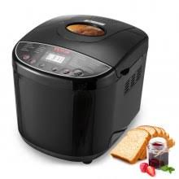

Receta básica de pan para comenzar a usar tu máquina

Ingredientes
-
1 taza de agua tibia
-
2 cucharadas de azúcar blanco
-
1 cubo de levadura fresca
-
1/4 taza de aceite vegetal
-
3 tazas de harina 000
-
1 cucharadita de sal
Procedimiento
-
Coloca el agua, el azúcar y la levadura en la cavidad de la máquina de
pan y deja que la levadura se disuelva y haga espuma por 10 minutos.
- Agrega el aceite, la harina, y la sal a la mezcla
- Selecciona la opción "Básico" o "Pan Blanco".
- Presiona "Comenzar".